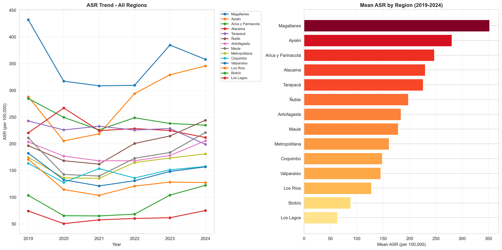

Figure 4: ASR trends for other neurodegenerative codes (G codes)
1.1.4 Summary Table - All ICD Codes by Year
Code
summary_pivot = asr_by_icd.pivot_table( index=['icd_code', 'description'], columns='year', values='asr_total', aggfunc='first').reset_index()summary_pivot.columns.name =Nonesummary_pivot.to_csv(os.path.join(output_path, 'asr_summary_pivot.csv'), index=False)year_cols = [c for c in summary_pivot.columns ifisinstance(c, int) or (isinstance(c, str) and c.isdigit())]format_dict = {col: '{:.2f}'for col in year_cols}summary_pivot.style.format(format_dict, na_rep='-').hide(axis="index")
icd_code
description
2019
2020
2021
2022
2023
2024
F00
Dementia in Alzheimer disease
5.70
4.53
4.45
5.45
5.69
6.86
F01
Vascular dementia
4.19
3.67
3.24
3.68
4.47
4.59
F02
Dementia in other diseases classified elsewhere
0.84
0.70
0.67
0.76
0.71
0.83
F03
Unspecified dementia
21.12
17.75
17.35
19.46
20.57
21.65
F04
Organic amnesic syndrome
0.02
0.05
0.04
0.06
0.04
0.04
F06
Other mental disorders due to brain damage
6.47
5.22
5.32
6.09
6.79
7.60
F07
Personality and behavioural disorders due to brain disease
Table 5: Summary statistics of neurodegenerative disease hospitalizations
1.2 Regional Analysis
1.2.1 Age-Standardized Rates by Region
Code
regional_asr_pivot = regional_asr.pivot_table( index='region', columns='year', values='asr', aggfunc='first').reset_index()regional_asr_pivot['Mean ASR'] = regional_asr_pivot[[c for c in regional_asr_pivot.columns if c !='region']].mean(axis=1).round(2)regional_asr_pivot = regional_asr_pivot.sort_values('Mean ASR', ascending=False)year_cols = [c for c in regional_asr_pivot.columns ifisinstance(c, (int, float)) and c !='Mean ASR']format_dict = {col: '{:.2f}'for col in year_cols + ['Mean ASR']}regional_asr_pivot.style.format(format_dict, na_rep='-').background_gradient( cmap='YlOrRd', subset=['Mean ASR']).hide(axis="index")
region
2019
2020
2021
2022
2023
2024
Mean ASR
Magallanes
432.15
317.20
308.51
309.51
384.78
358.09
351.71
Aysén
288.20
205.33
218.77
294.03
329.14
345.67
280.19
Arica y Parinacota
284.72
249.58
226.08
248.72
238.08
234.90
247.01
Atacama
220.57
267.07
224.64
228.52
224.88
211.80
229.58
Tarapacá
242.76
226.02
232.93
225.68
228.77
199.07
225.87
Ñuble
196.43
168.33
161.98
200.60
214.64
244.16
197.69
Antofagasta
203.45
176.92
168.23
168.24
178.17
205.53
183.42
Maule
211.13
142.68
139.67
172.90
183.73
221.16
178.54
Metropolitana
174.76
136.29
135.39
165.03
173.31
181.18
160.99
Coquimbo
163.35
127.66
153.69
135.98
151.35
157.61
148.27
Valparaíso
182.43
132.66
121.20
130.83
148.19
156.87
145.36
Los Ríos
170.87
114.37
103.48
120.85
128.34
127.50
127.57
Biobío
103.57
65.44
65.05
68.33
103.98
122.22
88.10
Los Lagos
74.20
50.63
57.69
60.27
61.66
75.17
63.27
Table 6: Age-standardized hospitalization rates by region (per 100,000)
Code
fig, axes = plt.subplots(1, 2, figsize=(16, 8))all_regions = mean_asr_region['region'].tolist()ax1 = axes[0]for region in all_regions: df_reg = regional_asr[regional_asr['region'] == region] ax1.plot(df_reg['year'], df_reg['asr'], marker='o', linewidth=2, markersize=5, label=region)ax1.set_xlabel('Year')ax1.set_ylabel('ASR (per 100,000)')ax1.set_title('ASR Trend - All Regions', fontweight='bold')ax1.legend(bbox_to_anchor=(1.02, 1), loc='upper left', fontsize=8)ax1.grid(True, alpha=0.3)ax1.set_xticks(YEARS)ax2 = axes[1]data_sorted = mean_asr_region.sort_values('mean_asr', ascending=True)colors = plt.cm.YlOrRd(data_sorted['mean_asr'] / data_sorted['mean_asr'].max())ax2.barh(data_sorted['region'], data_sorted['mean_asr'], color=colors)ax2.set_xlabel('Mean ASR (per 100,000)')ax2.set_title('Mean ASR by Region (2019-2024)', fontweight='bold')ax2.grid(True, alpha=0.3, axis='x')plt.tight_layout()save_figure(fig, 'regional_asr_trends.png')plt.show()

Figure 7: Age-standardized rates trend by region (2019-2024)
Table 13: Age-standardized rates - F-codes (Dementia) - National
Code
regional_asr_f_pivot = regional_asr_f.pivot_table( index='region', columns='year', values='asr', aggfunc='first').reset_index()regional_asr_f_pivot['Mean ASR'] = regional_asr_f_pivot[[c for c in regional_asr_f_pivot.columns if c !='region']].mean(axis=1).round(2)regional_asr_f_pivot = regional_asr_f_pivot.sort_values('Mean ASR', ascending=False)year_cols = [c for c in regional_asr_f_pivot.columns ifisinstance(c, (int, float)) and c !='Mean ASR']format_dict = {col: '{:.2f}'for col in year_cols + ['Mean ASR']}regional_asr_f_pivot.style.format(format_dict, na_rep='-').background_gradient( cmap='Blues', subset=['Mean ASR']).hide(axis="index")
Table 16: Age-standardized rates - G-codes (Neurological) - National
Code
regional_asr_g_pivot = regional_asr_g.pivot_table( index='region', columns='year', values='asr', aggfunc='first').reset_index()regional_asr_g_pivot['Mean ASR'] = regional_asr_g_pivot[[c for c in regional_asr_g_pivot.columns if c !='region']].mean(axis=1).round(2)regional_asr_g_pivot = regional_asr_g_pivot.sort_values('Mean ASR', ascending=False)year_cols = [c for c in regional_asr_g_pivot.columns ifisinstance(c, (int, float)) and c !='Mean ASR']format_dict = {col: '{:.2f}'for col in year_cols + ['Mean ASR']}regional_asr_g_pivot.style.format(format_dict, na_rep='-').background_gradient( cmap='Greens', subset=['Mean ASR']).hide(axis="index")
region
2019
2020
2021
2022
2023
2024
Mean ASR
Magallanes
216.15
145.93
147.84
159.86
193.66
191.94
175.90
Aysén
170.93
105.02
102.85
160.61
152.14
174.87
144.40
Arica y Parinacota
168.33
128.38
119.57
142.53
127.15
129.51
135.91
Ñuble
111.74
92.38
100.57
121.48
125.80
143.08
115.84
Atacama
118.82
136.71
115.28
99.88
107.74
105.39
113.97
Tarapacá
124.84
109.41
118.32
115.03
105.71
99.78
112.18
Antofagasta
132.09
103.69
108.36
108.55
103.69
116.58
112.16
Maule
122.75
84.80
81.99
104.12
112.21
133.96
106.64
Coquimbo
103.45
76.00
82.70
80.08
89.63
90.35
87.03
Metropolitana
95.01
70.54
72.52
86.49
91.63
91.81
84.67
Valparaíso
98.72
72.01
67.22
68.89
77.89
81.61
77.72
Los Ríos
108.50
64.66
61.50
78.47
78.04
74.48
77.61
Biobío
62.01
38.29
39.13
44.48
64.86
77.34
54.35
Los Lagos
41.01
26.38
30.25
28.98
30.39
43.05
33.34
Table 17: Mean ASR by region - G-codes (Neurological)
![]()